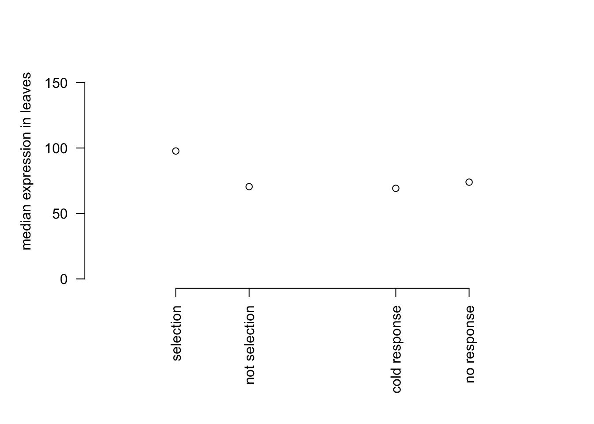
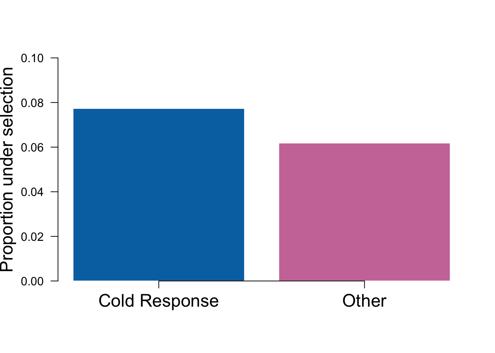
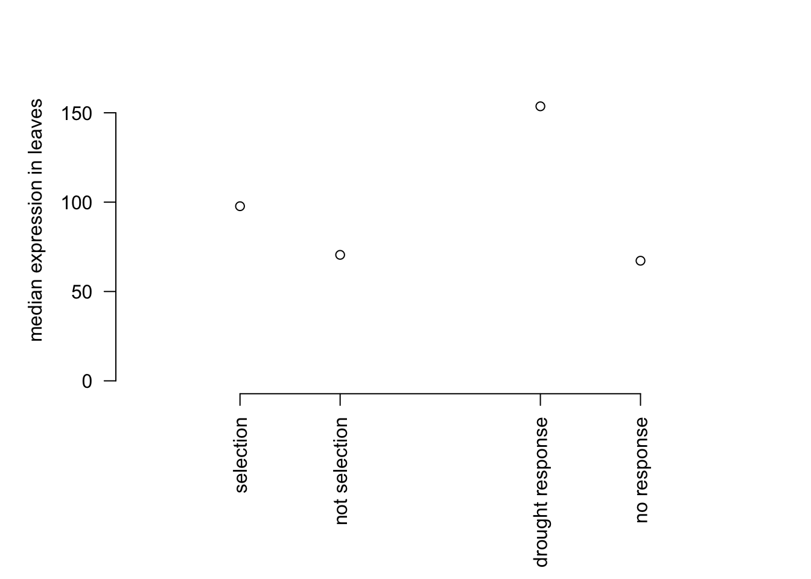
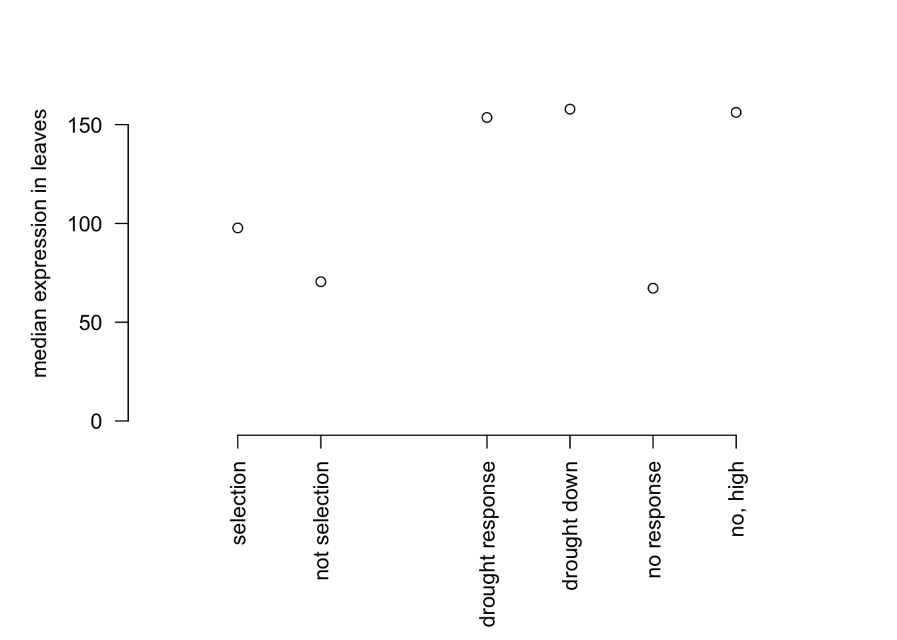
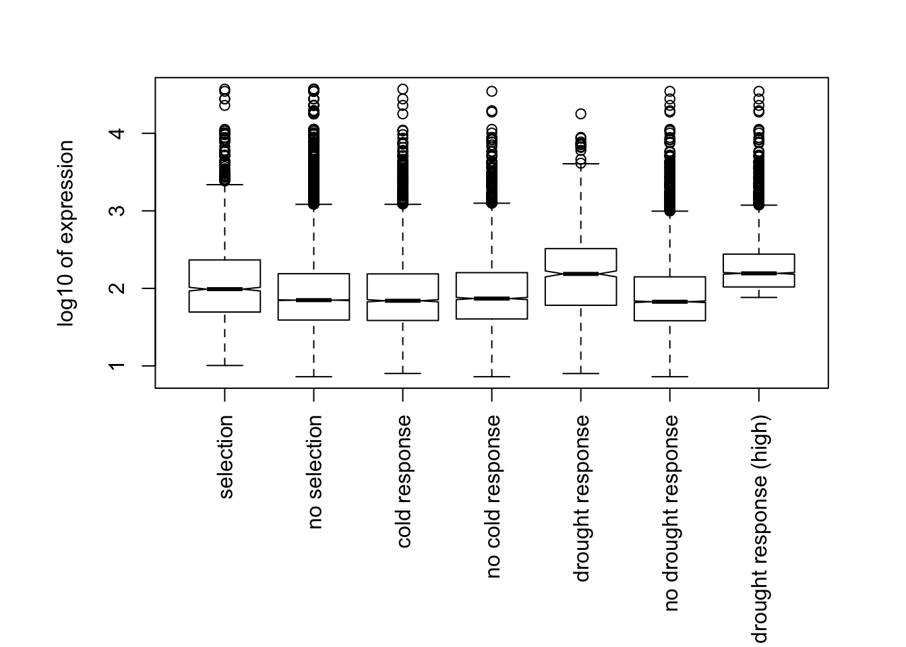
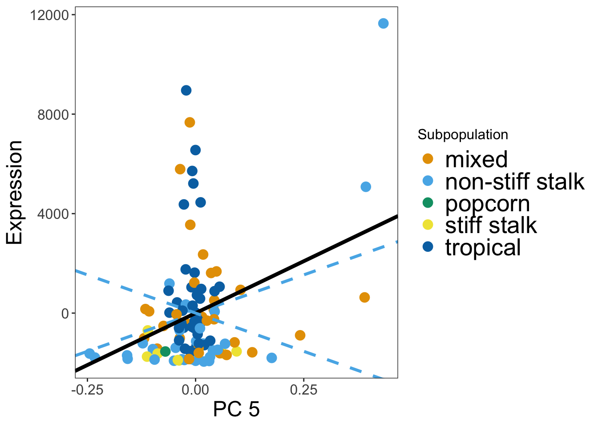
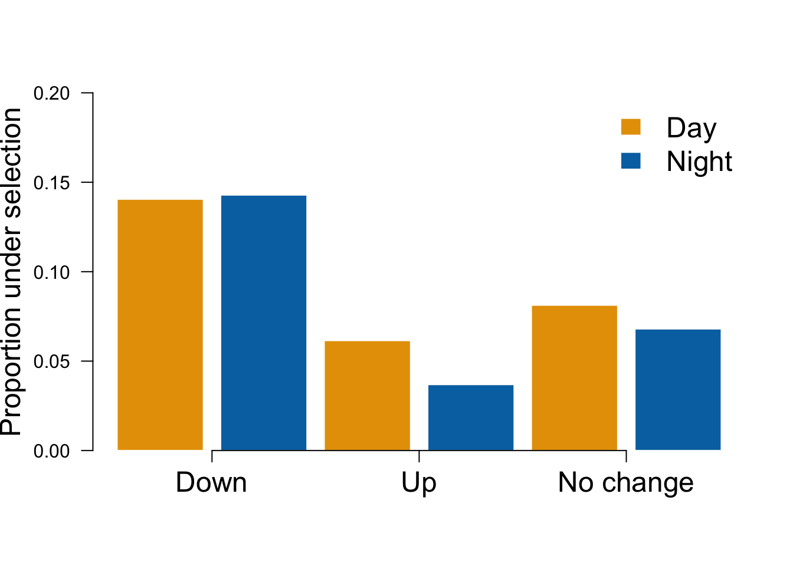

Last updated: 2020-05-07
Checks: 7 0
Knit directory: Blancetal/analysis/
This reproducible R Markdown analysis was created with workflowr (version 1.6.0). The Checks tab describes the reproducibility checks that were applied when the results were created. The Past versions tab lists the development history.
Great! Since the R Markdown file has been committed to the Git repository, you know the exact version of the code that produced these results.
Great job! The global environment was empty. Objects defined in the global environment can affect the analysis in your R Markdown file in unknown ways. For reproduciblity it’s best to always run the code in an empty environment.
The command set.seed(20200217) was run prior to running the code in the R Markdown file. Setting a seed ensures that any results that rely on randomness, e.g. subsampling or permutations, are reproducible.
Great job! Recording the operating system, R version, and package versions is critical for reproducibility.
Nice! There were no cached chunks for this analysis, so you can be confident that you successfully produced the results during this run.
Great job! Using relative paths to the files within your workflowr project makes it easier to run your code on other machines.
Great! You are using Git for version control. Tracking code development and connecting the code version to the results is critical for reproducibility. The version displayed above was the version of the Git repository at the time these results were generated.
Note that you need to be careful to ensure that all relevant files for the analysis have been committed to Git prior to generating the results (you can use wflow_publish or wflow_git_commit). workflowr only checks the R Markdown file, but you know if there are other scripts or data files that it depends on. Below is the status of the Git repository when the results were generated:
Ignored files:
Ignored: .DS_Store
Ignored: .RData
Ignored: .Rhistory
Ignored: .Rproj.user/
Ignored: data/.DS_Store
Ignored: data/df_STAR_HTSeq_counts_B73_match_based_on_genet_dist_DESeq2_normed_rounded.txt
Ignored: output/.DS_Store
Ignored: output/Identifying_Selected_Genes/.DS_Store
Ignored: output/Selection_on_Expression_of_Cold_Response_Genes/.DS_Store
Ignored: output/Selection_on_expression_of_coexpression_clusters/.DS_Store
Untracked files:
Untracked: analysis/scratch.Rmd
Untracked: data/cold-contingency-table.txt
Untracked: data/drought-contingency-table.txt
Untracked: data/quaint-results.rda
Untracked: figures/Supplement_Ve.png
Untracked: output/GO_analysis.txt
Untracked: output/PC5_day.txt
Untracked: output/all_day.txt
Untracked: output/all_sigenes_annotate.csv
Untracked: output/all_sigenes_annotate.txt
Untracked: output/cold-chisq-table.txt
Untracked: output/drought-chisq-table.txt
Unstaged changes:
Modified: analysis/Drought-genes.Rmd
Modified: analysis/Expression_plots.Rmd
Modified: analysis/Identifying_quaint.Rmd
Note that any generated files, e.g. HTML, png, CSS, etc., are not included in this status report because it is ok for generated content to have uncommitted changes.
These are the previous versions of the R Markdown and HTML files. If you’ve configured a remote Git repository (see ?wflow_git_remote), click on the hyperlinks in the table below to view them.
| File | Version | Author | Date | Message |
|---|---|---|---|---|
| Rmd | 5141f30 | jgblanc | 2020-05-07 | added saving contingency table |
| html | 1dfde4e | jgblanc | 2020-05-07 | Build site. |
| Rmd | 7cd9c70 | jgblanc | 2020-05-07 | added saving contingency table |
| html | feb6b89 | jgblanc | 2020-05-07 | Build site. |
| Rmd | 6478bf2 | jgblanc | 2020-05-07 | change to fisher test |
| html | 409888b | jgblanc | 2020-04-24 | Build site. |
| Rmd | 29bfe0e | jgblanc | 2020-04-24 | prepping to publish env |
| Rmd | 9c21090 | em | 2020-04-16 | tsuff |
| Rmd | 2b8f085 | em | 2020-04-07 | stuff |
| Rmd | dbf34fa | em | 2020-04-03 | stuff |
| Rmd | a128c45 | em | 2020-04-03 | stuff |
| Rmd | b2881a5 | em | 2020-04-02 | stuff |
| Rmd | d6a523b | em | 2020-04-02 | stuff |
| Rmd | cf43de2 | em | 2020-04-01 | stuff |
| Rmd | e0d8afc | em | 2020-03-25 | more stuff |
| Rmd | 640b45a | em | 2020-03-24 | drought genes |
| Rmd | 02b87d2 | em | 2020-03-23 | stuf |
| Rmd | 682f50e | em | 2020-03-23 | stuff |
The goal of this analysis is to determine if genes that have been shown to be differentially expressed in response to cold (Avila et al., 2018) or drought treatment (Forestan et al., 2020) are enriched for genes whose expression is under selection.
First, read in the Avila et al. differential expression data and get the names of the genes used in their analysis.
cold <- read.csv("../data/Cold.csv", header = F, stringsAsFactors = F)
cold <-cold[,2:19]
colnames(cold) <- c("V3_Gene_Name","V4_Gene_Name","Arabidopsis_Ortholog","Rice_Ortholog","Cold_1D_CG60_Means","Cold_1D_CG102_Means","Control_1D_CG60_Means","Control_1D_CG102_Means","FDR_1D_Genotype","FDR_1D_Treatment","FDR_\
1D_Interaction","Cold_4D_CG60_Means","Cold_4D_CG102_Means","Control_4D_CG60_Means","Control_4D_CG102_Means","FDR_4D_Genotype","FDR_4D_Treatment","FDR_4D_Interaction")
cold_names <- cold$V3_Gene_NameLet’s now load our results from using QUAINT to identify selected genes. See the “Detecting selection on expression of individual genes” page for details.
alltissues = c('GRoot',"Kern","LMAD26","LMAN26", "L3Tip","GShoot","L3Base")
load('../data/quaint-results.rda')The next step is to determine if differentially expressed genes are more likely to be under selection in every PC/Tissue combination. To do this we will use a chi-squared test.
First, separate genes that are differentially expressed in response to cold treatment and those that aren’t.
coldsum <- cold %>% select(V3_Gene_Name, V4_Gene_Name, FDR_1D_Treatment, FDR_4D_Treatment) ## pull out important columns
coldsum$sig = apply(coldsum[,3:4], 1, min, na.rm=T)
coldsigGenes = dplyr::filter(coldsum, sig < 0.1)$V3_Gene_Name
length(coldsigGenes)[1] 12239coldnotsigGenes = dplyr::filter(coldsum, sig > 0.1)$V3_Gene_Name
length(coldnotsigGenes)[1] 11379Before moving onto Fisher’s exact test, we will first check that the overlaps between cold response genes and selected genes were not due to both datasets being biased towards high expression genes.
### are coldsig genes higher expression (in LMAD26) than not sig genes?
mytissue = 'LMAD26'
exp = read.table(paste('../data/Raw_expression/',mytissue,'.txt', sep=''), stringsAsFactors = F)
exp_means = data.frame(gene = colnames(exp), expr = colMeans(exp), stringsAsFactors = F, row.names=NULL)
quaint_results = alltissueresults[[mytissue]]
quaint_ps = data.frame(gene = unlist(quaint_results[1,]),matrix(unlist(quaint_results[5,]), ncol=5, byrow=T), stringsAsFactors = F)
names(quaint_ps) =c('gene','PC1','PC2','PC3','PC4','PC5')
quaint_mer = dplyr::inner_join(exp_means, quaint_ps, by = 'gene') #merge with expression data
mydflong = tidyr::gather(quaint_mer, 'PC','pval', PC1:PC5)
##compare expression levels of genes that are sig and not sig for selection
mysig = dplyr::filter(mydflong, pval < 0.05)
mynot = dplyr::filter(mydflong, pval >= 0.05)
## compare expression levels of diff expressed genes
coldmer = dplyr::inner_join(coldsum, exp_means, by=c('V3_Gene_Name' = 'gene'))
csig = dplyr::filter(coldmer, sig < 0.1)
cnot = dplyr::filter(coldmer, sig >=0.1)
par(mar=c(8,5,2,2))
plot(c(1,2,4,5), c(median(mysig$expr), median(mynot$expr), median(csig$expr), median(cnot$expr)),
bty="n", ylim=c(0,180), xaxt="n", yaxt="n",ylab = "median expression in leaves", xlab="", xlim = c(0,6))
axis(1, at=c(1,2,4,5), lab = c('selection','not selection','cold response','no response'), las=2)
axis(2,las=2)
| Version | Author | Date |
|---|---|---|
| 409888b | jgblanc | 2020-04-24 |
Gene expression of cold-response genes is not higher than expression of genes that don’t respond to cold. Now we will conduct Fisher’s exact test to compare the proportion of genes that show evidence of selection (un-adjusted p value less than 0.05) in cold-response genes compared with other genes.
##function for running the chisq test on a specific pc/tissue combination
run_chi_sq <- function(mytissue, myPC,sigGenes, notsigGenes, myp = 0.05, returntable=F){
quaint_results = alltissueresults[[mytissue]] ##pull out tissue specific genes
quaint_results_pc = data.frame(mygene = unlist(quaint_results[1,]), pval = unlist(lapply(quaint_results[5,], function(x){x[myPC]})), stringsAsFactors = F) ## just need a table for the specific PC's pvalue
sigOver = dplyr::filter(quaint_results_pc, mygene %in% sigGenes)
notsigOver = dplyr::filter(quaint_results_pc, mygene %in% notsigGenes)
##make the chisq table
bothsig = nrow(dplyr::filter(sigOver, pval < myp))
diffexponly = nrow(dplyr::filter(sigOver, pval >= myp))
selonly = nrow(dplyr::filter(notsigOver, pval < myp))
nothingsig = nrow(dplyr::filter(notsigOver, pval > myp))
chitbl = matrix(c(bothsig, selonly, diffexponly, nothingsig), nrow=2) ##make the chisq table
if(returntable==T){return(chitbl)
}else{
chitest = fisher.test(chitbl) ##run the test
return(chitest$p.value)}
}
##run on all PCs and all tissues for the cold genes
myresults = sapply(alltissues, function(mytissue){
sapply(1:5,function(myPC){
run_chi_sq(mytissue, myPC, coldsigGenes, coldnotsigGenes, 0.05)
})
})
### note that we don't know what direction this goes in.
##we really just care about combos with significant evidence of selection in at least one gene
newresults = myresults
newresults[t(sigTable[,1:5]) ==0] <- NA
### make a table of the data for the supplement
coldTable = lapply(alltissues, function(mytissue){
sapply(1:5,function(myPC){
mytable = run_chi_sq(mytissue, myPC, coldsigGenes, coldnotsigGenes, 0.05, returntable=T)
return(data.frame(tissue = mytissue, pc = myPC, bothsig = mytable[1,1], selonly = mytable[2,1], diffexponly = mytable[1,2], nothingsig = mytable[2,2], stringsAsFactors = F))
})
})
coldTableOut = t(do.call(cbind, coldTable))
write.table(coldTableOut, row.names=F, col.names=T, file = "../data/cold-contingency-table.txt", quote=F)
kable(newresults)| GRoot | Kern | LMAD26 | LMAN26 | L3Tip | GShoot | L3Base |
|---|---|---|---|---|---|---|
| NA | NA | 0.7777273 | 0.6994290 | NA | NA | NA |
| NA | 0.7761694 | 0.7563795 | NA | 0.7709694 | 0.8824207 | 0.7851742 |
| NA | 0.3622327 | 1.0000000 | 0.0313280 | NA | NA | 0.8169160 |
| NA | 1.0000000 | NA | NA | 0.8071866 | NA | NA |
| NA | NA | 0.0043836 | 0.0832287 | NA | NA | NA |
Make bonferroni correction
kable(apply(newresults, 2, method="bonferroni",p.adjust)) | GRoot | Kern | LMAD26 | LMAN26 | L3Tip | GShoot | L3Base |
|---|---|---|---|---|---|---|
| NA | NA | 1.0000000 | 1.0000000 | NA | NA | NA |
| NA | 1 | 1.0000000 | NA | 1 | 0.8824207 | 1 |
| NA | 1 | 1.0000000 | 0.0939840 | NA | NA | 1 |
| NA | 1 | NA | NA | 1 | NA | NA |
| NA | NA | 0.0175345 | 0.2496862 | NA | NA | NA |
The strongest signal for enrichment is for daytime expression in adult leaf tissue along PC5.
Finally, we will make a Figure S2 for showing the proportion of cold-response genes under selection along PC 5 in adult leaf tissue.
make_enrichment_fig <- function(mytissue, myPC, myp, sigGenes, notsigGenes){
quaint_results = alltissueresults[[mytissue]] ##pull out tissue specific genes
quaint_results_pc = data.frame(mygene = unlist(quaint_results[1,]), pval = unlist(lapply(quaint_results[5,], function(x){x[myPC]})), stringsAsFactors = F) ## just need a table for the specific PC's pvalue
sigOver = dplyr::filter(quaint_results_pc, mygene %in% sigGenes)
notsigOver = dplyr::filter(quaint_results_pc, mygene %in% notsigGenes)
##make the chisq table
bothsig = nrow(dplyr::filter(sigOver, pval < myp))
diffexponly = nrow(dplyr::filter(sigOver, pval >= myp))
selonly = nrow(dplyr::filter(notsigOver, pval < myp))
nothingsig = nrow(dplyr::filter(notsigOver, pval > myp))
propDiffSel = bothsig/(bothsig+diffexponly)
propNotDiffSel = selonly/(selonly+nothingsig)
return(c(propDiffSel, propNotDiffSel))
}
test = make_enrichment_fig('LMAD26', 5, 0.05, coldsigGenes, coldnotsigGenes)
coldplot = function(){
bp = barplot(test, ylim=c(0,0.1), col = c("#0072B2","#CC79A7"), border="white", yaxt = "n", ylab = "Proportion under selection", cex.lab=1.5)
axis(2, las=2)
axis(1, at = bp, lab = c('Cold Response','Other'), cex.axis=1.5)}
coldplot()
We use drought response genes from Forestan et al. (https://onlinelibrary-wiley-com.proxy2.cl.msu.edu/doi/full/10.1111/pce.13660) Only looking at NST0 vs WST0 because that shows comparison of expression changes in drought and control. NSTO is control, WSTO is stressed
First, we will separated the drought response genes from the non drought response genes.
droughtgenes = read.csv('../data/pce13660-supp-0004-supplementalfile3_cuffdiff.csv', stringsAsFactors = F)
droughtgenes$v4_gene_model = sapply(droughtgenes$gene_id, function(x){strsplit(x, split=':')[[1]][2]}) #make a column for gene names
#convert gene names from v4 to v3
genemodel = read.csv('../data/gene_model_xref_v3.csv', stringsAsFactors = F)[,1:2]
dgmerge = dplyr::inner_join(droughtgenes, genemodel, by = "v4_gene_model")
droughtsig = dplyr::filter(dgmerge, q_value < 0.1)$v3_gene_model ##filter out sig genes
droughtnot = dplyr::filter(dgmerge, q_value > 0.1)$v3_gene_model ##filter out sig genesNext, we want to check the overall expression differences between different categories of genes in adult leaf tissue.
##comparing overall expression level in the Kremling data between categories (look at LMAD26 for now)
mytissue = 'LMAD26'
exp = read.table(paste('../data/Raw_expression/',mytissue,'.txt', sep=''), stringsAsFactors = F)
exp_means = data.frame(gene = colnames(exp), expr = colMeans(exp), stringsAsFactors = F, row.names=NULL)
quaint_results = alltissueresults[[mytissue]]
quaint_ps = data.frame(gene = unlist(quaint_results[1,]),matrix(unlist(quaint_results[5,]), ncol=5, byrow=T), stringsAsFactors = F)
names(quaint_ps) =c('gene','PC1','PC2','PC3','PC4','PC5')
quaint_mer = dplyr::inner_join(exp_means, quaint_ps, by = 'gene') #merge with expression data
mydflong = tidyr::gather(quaint_mer, 'PC','pval', PC1:PC5)
##compare expression levels
mysig = dplyr::filter(mydflong, pval < 0.05)
mynot = dplyr::filter(mydflong, pval >= 0.05)
## compare expression levels of diff expressed genes
droughtmer = dplyr::inner_join(dgmerge, exp_means, by=c('v3_gene_model' = 'gene'))
dsig = dplyr::filter(droughtmer, q_value < 0.1)
dnot = dplyr::filter(droughtmer, q_value >=0.1)
par(mar=c(8,5,2,2))
plot(c(1,2,4,5), c(median(mysig$expr), median(mynot$expr), median(dsig$expr), median(dnot$expr)),
bty="n", ylim=c(0,180), xaxt="n", yaxt="n",ylab = "median expression in leaves", xlab="", xlim = c(0,6))
axis(1, at=c(1,2,4,5), lab = c('selection','not selection','drought response','no response'), las=2)
axis(2,las=2)
The drought response genes have higher expression compared to non-drought response genes. In order to do the chi-squared test we will use the 3500 most highly expressed non-drought genes as our non-drought to the proportion of selected genes to the proportion in drought genes. This will ensure that overlaps between drought response genes and selected genes were not due to both datasets being biased towards high expression genes.
## pick the top expressed genes in dnot
dnot_high = dnot[order(-dnot$expr),][1:3500,]
#down regulated genes
dsig_down = dplyr::filter(dsig, value_1 > value_2)
dsig_up = dplyr::filter(dsig, value_2 > value_1)
par(mar=c(8,5,2,2))
plot(c(1,2,4,5,6,7), c(median(mysig$expr), median(mynot$expr), median(dsig$expr), median(dsig_down$expr), median(dnot$expr), median(dnot_high$expr)),
bty="n", ylim=c(0,180), xaxt="n", yaxt="n",ylab = "median expression in leaves", xlab="",
xlim = c(0,8))
axis(1, at=c(1,2,4,5,6,7),
lab = c('selection','not selection','drought response','drought down','no response','no, high'), las=2)
axis(2,las=2)
Above we can see that the no response high expression genes now match the median expression of the drought response genes. Below we will make Figure S1 which shows boxplots of expression values across response and non response genes for both drought and cold response genes.

Finally we will do the chi-squared test for drought response. We will run 3 separate tests. The first test is using the high expression subsample. The next two are just looking at the drought response genes that are upregulated or downregulated in response to drought separately.
###now test for enrichment compared to the high expression sample
dresults_high = sapply(alltissues, function(mytissue){
sapply(1:5,function(myPC){
run_chi_sq(mytissue, myPC, dsig$v3_gene_model, dnot_high$v3_gene_model, 0.05)
})
})
dresults_high[t(sigTable[,1:5]) ==0] <- NA #remove thiings with no significant signal of selection
##just down reg responses
dresults_high_down = sapply(alltissues, function(mytissue){
sapply(1:5,function(myPC){
run_chi_sq(mytissue, myPC, dsig_down$v3_gene_model, dnot_high$v3_gene_model, 0.05)
})
})
dresults_high_down[t(sigTable[,1:5]) ==0] <- NA #remove thiings with no significant signal of selection
##up responses
dresults_high_up = sapply(alltissues, function(mytissue){
sapply(1:5,function(myPC){
run_chi_sq(mytissue, myPC, dsig_up$v3_gene_model, dnot_high$v3_gene_model, 0.05)
})
})
dresults_high_up[t(sigTable[,1:5]) ==0] <- NA #remove thiings with no significant signal of selection
droughtTableOut = t(do.call(cbind, coldTable))
write.table(droughtTableOut, row.names=F, col.names=T, file = "../data/drought-contingency-table.txt", quote=F)Here are the results that we reported in the results section of the paper. Specifically we report the bonferroni corrected p-values for PC 5 for the genes down-regulated in response to drought and the absence of significant enrichment in genes upregulated in response to drought on PC 5.
kable(apply(dresults_high_down, 2, method="bonferroni",p.adjust)) | GRoot | Kern | LMAD26 | LMAN26 | L3Tip | GShoot | L3Base |
|---|---|---|---|---|---|---|
| NA | NA | 0.7933238 | 0.2495644 | NA | NA | NA |
| NA | 1.0000000 | 0.1264809 | NA | 1.0000000 | 0.6962722 | 0.0676011 |
| NA | 1.0000000 | 1.0000000 | 1.0000000 | NA | NA | 1.0000000 |
| NA | 0.0683568 | NA | NA | 0.9012942 | NA | NA |
| NA | NA | 0.0009667 | 0.0000326 | NA | NA | NA |
kable(apply(dresults_high_up, 2, method="bonferroni",p.adjust)) | GRoot | Kern | LMAD26 | LMAN26 | L3Tip | GShoot | L3Base |
|---|---|---|---|---|---|---|
| NA | NA | 1.0000000 | 1.0000000 | NA | NA | NA |
| NA | 1.0000000 | 1.0000000 | NA | 0.8676325 | 0.1813478 | 0.970032 |
| NA | 0.1540548 | 0.4154579 | 1.0000000 | NA | NA | 1.000000 |
| NA | 0.3733326 | NA | NA | 0.6107358 | NA | NA |
| NA | NA | 1.0000000 | 0.2312074 | NA | NA | NA |
Finally we report that of the 69 genes that are selected and down regulated in response to drought, for 43 of them the slope of the relationship between PC 5 and gene expression was positive.
##pull out qm for genes that show selection in LMAD26 and LMAN26 along PC 5.
mytissue = 'LMAD26'
quaint_results = alltissueresults[[mytissue]]
quaint_cms = data.frame(gene = unlist(quaint_results[1,]),matrix(unlist(quaint_results[2,]), ncol=5, byrow=T), stringsAsFactors = F)
names(quaint_cms) = c('gene','PC1','PC2','PC3','PC4','PC5')
mycms_long = tidyr::gather(quaint_cms, 'PC','Cm', PC1:PC5) ##gather into a long data frame
mypcm_long = dplyr::inner_join(mycms_long, mydflong)##merge with pvaluesJoining, by = c("gene", "PC")mysig05 = dplyr::filter(mypcm_long, pval < 0.05 & PC == 'PC5') ##look at sig along PC5
## look at cms in the overlap with drought down regulation genes
mysigdown = dplyr::filter(mysig05, gene %in% dsig_down$v3_gene_model)
## number with positive slopes
nrow(dplyr::filter(mysigdown, Cm > 0))[1] 43As a sanity check let’s plot PC 5 vs expression for some of the 43 genes and make sure they have a postive slope.
###make a plot of what's on PC5 (and to sanity check)
mygene = 'GRMZM2G351977'
mytissue = 'LMAD26'
#get gene index for kernel
lmad26genes = unlist(alltissueresults[[3]][1,])
myindex = match(mygene, lmad26genes)
#make a plot
explot = makeGenePlot('LMAD26',myindex, 5)
explot
Now let’s make Figure 2 showing the proportion of genes under selection for down and upregulated drought genes.
get_enrichment <- function(mytissue, myPC, myp, sigGenes, notsigGenes){
quaint_results = alltissueresults[[mytissue]] ##pull out tissue specific genes
quaint_results_pc = data.frame(mygene = unlist(quaint_results[1,]), pval = unlist(lapply(quaint_results[5,], function(x){x[myPC]})), stringsAsFactors = F) ## just need a table for the specific PC's pvalue
sigOver = dplyr::filter(quaint_results_pc, mygene %in% sigGenes)
notsigOver = dplyr::filter(quaint_results_pc, mygene %in% notsigGenes)
##make the chisq table
bothsig = nrow(dplyr::filter(sigOver, pval < myp))
diffexponly = nrow(dplyr::filter(sigOver, pval >= myp))
selonly = nrow(dplyr::filter(notsigOver, pval < myp))
nothingsig = nrow(dplyr::filter(notsigOver, pval > myp))
return(c(bothsig, bothsig/diffexponly, selonly/nothingsig))
}
sigcounts_down = sapply(alltissues, function(mytissue){
lapply(1:5,function(myPC){
get_enrichment(mytissue, myPC, 0.05,dsig_down$v3_gene_model, dnot_high$v3_gene_model)
})
})
sigcounts_up = sapply(alltissues, function(mytissue){
lapply(1:5,function(myPC){
get_enrichment(mytissue, myPC, 0.05,dsig_up$v3_gene_model, dnot_high$v3_gene_model)
})
})
makeplot = function(x){myplot = c(sigcounts_down[5,3][[1]][2], sigcounts_down[5,4][[1]][2], sigcounts_up[5,3][[1]][2], sigcounts_up[5,4][[1]][2], sigcounts_down[5,3][[1]][3], sigcounts_down[5,4][[1]][3])
bp = barplot(myplot, ylim=c(0,0.2), col = c("#E69F00", "#0072B2"), border="white", yaxt = "n", ylab = "Proportion under selection", cex.lab=1.5)
axis(2, las=2)
axis(1, at = bp[c(1,3,5),]+0.6, lab = c('Down','Up','No change'), cex.axis=1.5)
legend('topright', c('Day','Night'), bty="n", fill = c("#E69F00", "#0072B2"), border="white", cex=1.5)}
makeplot()
We can also generate a table showing the number of significant drought response, the percent down-regulated and the percent up-regulated for both day and night.
df <- rbind(unlist(sigcounts_down[5,3]), unlist(sigcounts_down[5,4]))
colnames(df) <- c("Number Sel Genes", "Proportion Down-regulated", "Proportion Up-regulated")
row.names(df) <- c("Day", "Night")
kable(df)| N | umber Sel Genes P | roportion Down-regulated P | roportion Up-regulated |
|---|---|---|---|
| Day | 69 | 0.1405295 | 0.0812732 |
| Night | 58 | 0.1428571 | 0.0680041 |
sig_ind <- fread("../data/siggenes.txt")
sig_cold <- left_join(sig_ind, coldsum, by = c("V1" = "V3_Gene_Name")) %>% mutate("Cold_Sig" = sig < 0.1) %>% select("V1", "V2", "V3", "V4","V5", "Cold_Sig")
sig_drought <- left_join(sig_cold, dgmerge, by = c("V1" = "v3_gene_model")) %>% mutate("Drought_down-regulated" = value_1 > value_2 & significant == "yes") %>% mutate("Drought_up-regulated" = value_2 > value_1 & significant == "yes") %>% select("V1", "V2", "V3", "V4", "V5","Cold_Sig", "significant", "Drought_down-regulated", "Drought_up-regulated")
colnames(sig_drought) <- c("Gene_name", "PC", "P-value", "FDR", "Tissue", "Cold_response", "Drought_response", "Drought_down-regulated","Drought_up-regulated")
write.csv(sig_drought, "../output/all_sigenes_annotate.csv")
sessionInfo()R version 3.6.2 (2019-12-12)
Platform: x86_64-apple-darwin15.6.0 (64-bit)
Running under: macOS High Sierra 10.13.6
Matrix products: default
BLAS: /Library/Frameworks/R.framework/Versions/3.6/Resources/lib/libRblas.0.dylib
LAPACK: /Library/Frameworks/R.framework/Versions/3.6/Resources/lib/libRlapack.dylib
locale:
[1] en_US.UTF-8/en_US.UTF-8/en_US.UTF-8/C/en_US.UTF-8/en_US.UTF-8
attached base packages:
[1] stats graphics grDevices utils datasets methods base
other attached packages:
[1] data.table_1.12.8 quaint_0.0.0.9000 reshape2_1.4.3 knitr_1.28
[5] dplyr_0.8.4 ggplot2_3.2.1 workflowr_1.6.0
loaded via a namespace (and not attached):
[1] Rcpp_1.0.3 highr_0.8 plyr_1.8.5 compiler_3.6.2
[5] pillar_1.4.3 later_1.0.0 git2r_0.26.1 tools_3.6.2
[9] digest_0.6.25 evaluate_0.14 lifecycle_0.1.0 tibble_2.1.3
[13] gtable_0.3.0 pkgconfig_2.0.3 rlang_0.4.4 yaml_2.2.1
[17] xfun_0.12 withr_2.1.2 stringr_1.4.0 vctrs_0.2.3
[21] fs_1.3.1 rprojroot_1.3-2 grid_3.6.2 tidyselect_1.0.0
[25] glue_1.3.1 R6_2.4.1 rmarkdown_2.1 farver_2.0.3
[29] tidyr_1.0.2 purrr_0.3.3 magrittr_1.5 whisker_0.4
[33] ellipsis_0.3.0 backports_1.1.5 scales_1.1.0 promises_1.1.0
[37] htmltools_0.4.0 assertthat_0.2.1 colorspace_1.4-1 httpuv_1.5.2
[41] labeling_0.3 stringi_1.4.6 lazyeval_0.2.2 munsell_0.5.0
[45] crayon_1.3.4